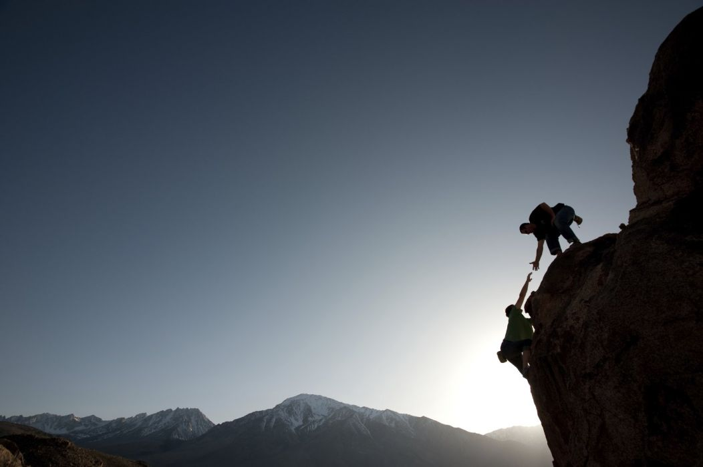
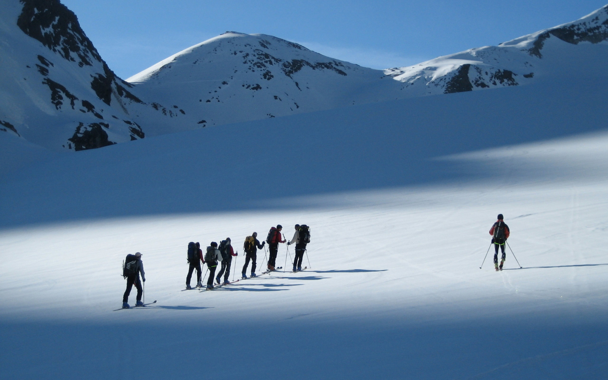
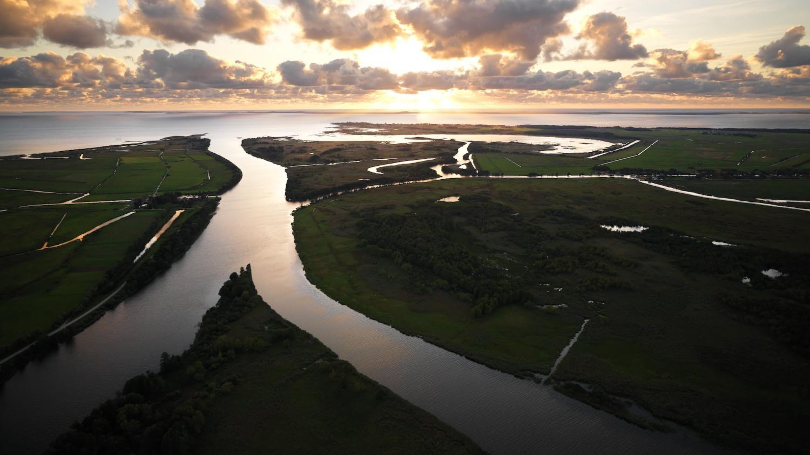

Kelionė į Nepalą
Nepalas - tai įspūdžiai visam gyvenimui. Atraskite pasaulio stogu vadinamą
Nepalą turtingoje pažintinėje kelionėje, kurios metu aplankysite
istoriškai ir kultūriškai svarbius miestus ir šventyklas, regėsite
Himalajų viršukalnes tekant saulei, grožėsitės Fevos ežero ramybe.
Programa:
-
1 -2 DIENA Skrydis Vilnius - Europos miestas – Katmandu. Atvykimas į
Katmandu. Įsikūrimas viešbutyje, vakarienė, poilsis. Ypatingai
smalsiems: trumpa pažintis su vakarėjančiu Katmandu miestu.
-
3 DIENA Po pusryčių išvykstame Pokharos link. Dalį kelionės plauksime
kalnų upe plaustais (4-5 val.) ir gėrėsimės nuostabia gamta bei
miestelių apylinkėmis. Po plaukimo pietaujame ir važiuojame į Pokharą.
Įsikūrimas viešbutyje ant Fevos ežero kranto. Poilsis ir nakvynė
viešbutyje.
-
4 DIENA Visa diena Pokharoje. Dieną pasitinkame prie Pasaulio Taikos
Stupos, nuo aukšto kalno grožėdamiesi Fevos ežeru ir visa Pokhara.
Toliau aplankome Deiviso krioklius bei įspūdingas Guptešvaro Mahadevi
olas, kur aplankysime egzotišką ir paslaptingą dievui Šivai tarp
stalagmitų ir stalaktitų įkurtą senovinę šventyklą. Nuo mistinių
įspūdžių atsigauname ir sugrįžtame į save, pietaudami restorane -
tibetiečių pabėgėlių gyvenvietėje. Soti sriuba thukpa, garuose virti
koldūnai momo, įvairiausi troškiniai ir kiti gardumynai nei vieno
nepaliks abejingo. Po pietų pasivaikštome tibetiečių gyvenvietėje,
stebime jų buitį, aplankome vietinį vienuolyną, sudalyvaujame popiečio
pudžoje, norintys turės laiko ir pamedituoti. Vakare grįžtame į
viešbutį.
- 5 DIENA Skrydis Katmandu – Europos miestas – Vilnius.
Ignas Eismantas


